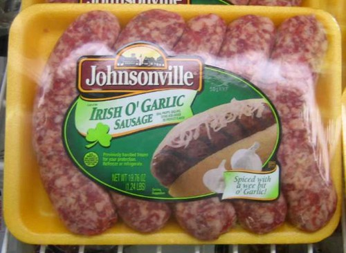

Yet another way you can be bacon-clad: Arche McPhee is selling this bacon-print tuxedo… and it’s bacon scented. I tried to infuse my bacon costume with a bacon scent, and it didn’t really work. I don’t know how they do it. They say it’s “tailored from chemically treated latex print fabric.” I still don’t know how they do it. It’s a miracle of modern science, people. How long does the bacon scent last? If you hang it in your closet, will your entire wardrobe start to smell like bacon? The mind reels. Thanks once again to Miss Delirium Tremens for the heads-up.
For years, I scowled at the yogurt section of the grocery store… how could there be “low-fat” and “non-fat”, but no “all-the-yummy-fat” option?
Then I found Brown Cow. Brown Cow is the yum. They’ve got the typical, blah, low- and non-fat versions, but they’re smarter than the average cow: they also offer a full-on whole milk lineup, which have a thick layer of cream on the top. The chocolate, coffee and maple flavors are probably delicious, but I can’t bring myself to try them — if I wanted dessert, I’d be eating ice cream. I stick to the fruit flavors. It’s seriously delicious, I don’t even think about eating any of that silly low-fat nonsense anymore. They also manage to be organic & environmentally friendly without spelling yogurt with an h, which I appreciate.
This is completely silly and gimmicky, and I totally want to do it.
Dinner in the Sky
Dinner in the Sky is an outift in Belgium that will strap you and 21 of your nearest & dearest into four-point restraint, revolving seats around a Benihana-ish dinner table, and use a crane to hoist you 150 feet up into the air to enjoy a meal. I’m not sure if they make you wear those dippy chef hats. And I’m also not sure what you’re supposed to do if you feel a need to visit the restroom mid-meal. An eight-hour rental will run you somewhere in the neighborhood of 10,000 euros. [via Cynical-C]
Last year for Halloween, I was bacon. If you’ve never been bacon before, I highly recommend it. Everybody, you see, loves bacon. It is, as my friend Monica says, the Candy of the Meats.
People do not want to be quiet about their love for bacon, they want to declare it, often loudly. Even the most shy people at least muttered “bacon!” under their breath as they passed me. I have never been so popular, so adored (and strangely, so hit-on) in my life.
I won the costume contest, which was novel for me — I’ve never had a costume that would have even been considered a contender before. It might have been influenced by my handing out bacon to everyone at the party. But I couldn’t be the very embodiment of temptation that is bacon without following through with some actual meaty goodness — as it was, I had more than a few people trying to bite me.
It was a beautiful experience, and one that everyone should be able to join in, so here are the instructions on how you, too, can be bacon for a day:
Buy two sheets of foam from a foam supply store. The sheets I got were 2′ x 6′. You’ll also need 2 or 3 colors of spray paint, some big plastic bags, stick pins, a hot glue gun and glue, and a few feet of heavy-duty 2″ velcro.
Lie face-down on one of the foam pieces, letting your feet hang off the edge, and trace the edges of your face on the foam with a big black marker. If you’re like me, you’ll wind up with black marker on your face, so be sure to wash that off quickly.
Cut out the face hole.
Lie down on the foam again, this time to mark where the top of your shoulders will be when your face is lined up with the hole. Mark the edges of the foam with a black marker.
Glue the two pieces of foam together at the top, above the shoulder lines, leaving enough room for your head. I used a combination of spray-mount glue and a hot glue gun. I’m a little embarassed to own a hot glue gun, but making this costume makes me feel a little better about it.
Use the black marker to trace an uneven, bacony outline on the foam.
Cut away the edges of the foam. Bevel the edges of the foam, to give it a slightly rounded, and less-obviously-foam appearance. Try to not freak out at the sight of all the little squirrelly bits of foam that are all over your living room.
Leaving room for an arm hole, glue one side of the bacon together. I used my hot glue gun, with slightly less shame this time. Be generous with the glue, this is where your costume is going to get strained.
On the other side, apply some nice, wide velcro to the opening (again, leaving room for an arm hole). I used industrial strength, 2″ wide velcro, and it worked great. It’s self-stick, and it adheres to the foam just fine.
Humu’s last post about Floratina’s Funny Face cup reminded me of Way Out Junk‘s post about Goofy Grape Sings. After all these years it’s so great to finally match a voice to that Funny face … and it sounds like Boris Badinov. Yes, all the voices are done by Paul Frees. The songs are available for download, but personally I just like the album cover.
This post at a sampler of things reminded me of this great picture I took last summer of my dear friend Floratina, and her cherished Freckle Face Strawberry Funny Face cup. We were at a beach burn down in San Pedro, and the light from the fire was so romantic… I was happy to be able to capture this love between a woman and her cup.
I don’t think I ever had Funny Face drink mixes — Dad was a Kool-Aid man, all the way. Dad always had two flavors going in the fridge at once: one jug of Mountain Berry Punch, and the other jug on rotation through the other flavors. My brother and I used to make quadruple-strength Kool-Aid (two packets, twice the sugar, half the water) and nuke it in the microwave. Yum!
The Waffle Whiffer wishes everyone a Happy St. Patrick’s Day with this nifty Uncle O’Grimacey plastic bag puppet. As a kid I was told never to play with plastic bags … but puppets were AOK! Thanks Waffle Whiffer! Happy St. Patrick’s day everybody!
No celebration of cheesy Irishness is complete without Lucky the Leprechaun:
The first Lucky Charms commercial
This is the very first commercial for Lucky Charms. This was done by Bill Melendez — before he started his own studio to produce the Peanuts specials, he did a lot of work on animated commercials. This commercial is from about 1964.
Kites are fun!
I love this one because it reminds me of Kites Are Fun, by the Free Design:
A leprechaun bit us in the butt today, and we’ve got the Saint Patrick’s Day fever but good.

Mmm… Irishy!
We found these in a little grocery store in Downieville, California. Downieville is so small that even the people who live there have never heard of it. Anyway, we spied these sitting in the deli case, and did a spit-take. Because nothing says “Irish” like a cartoon shamrock, a liberal use of “o’”, and “a wee bit o’ garlic!”
Speaking of liberal uses of “o’”, meet Uncle O’Grimacey:
If that doesn’t make you want a Shamrock Shake… you’re in good company.
We’re cooking up our St. Paddy’s plans — Hanford’s 100% Irish, and I’m 0%, so he’s in charge. I’ll just be happy if I can get some corned beef & soda bread. And maybe a Shamrock Shake.
100 years of Kellogg’s breakfast advertising all wrapped up in a tasty Flash coating. This should be better than it actually is, but there’s a few gems in there. You can save images if you use the “enlarge image” button first.